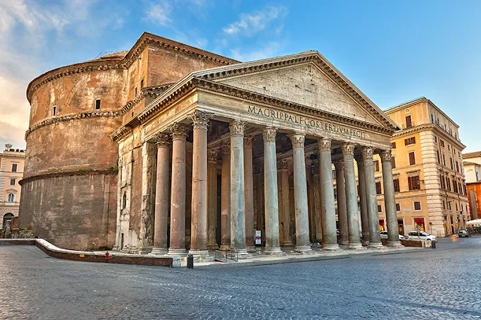
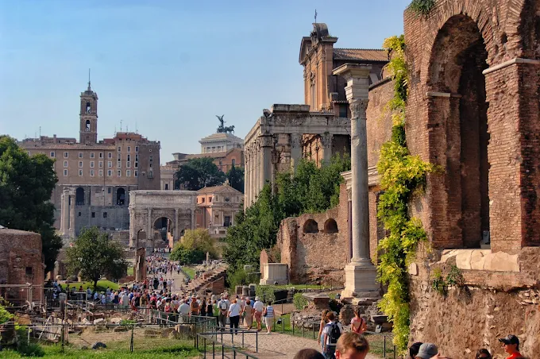
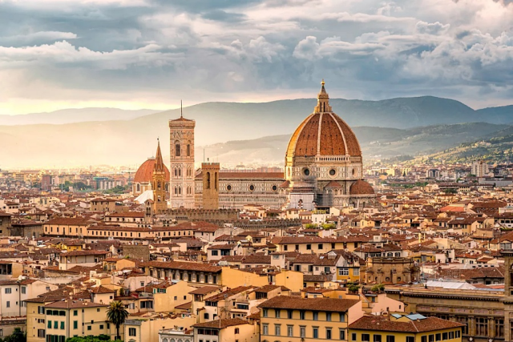
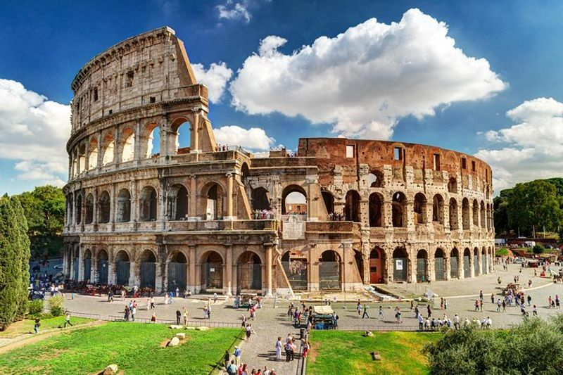
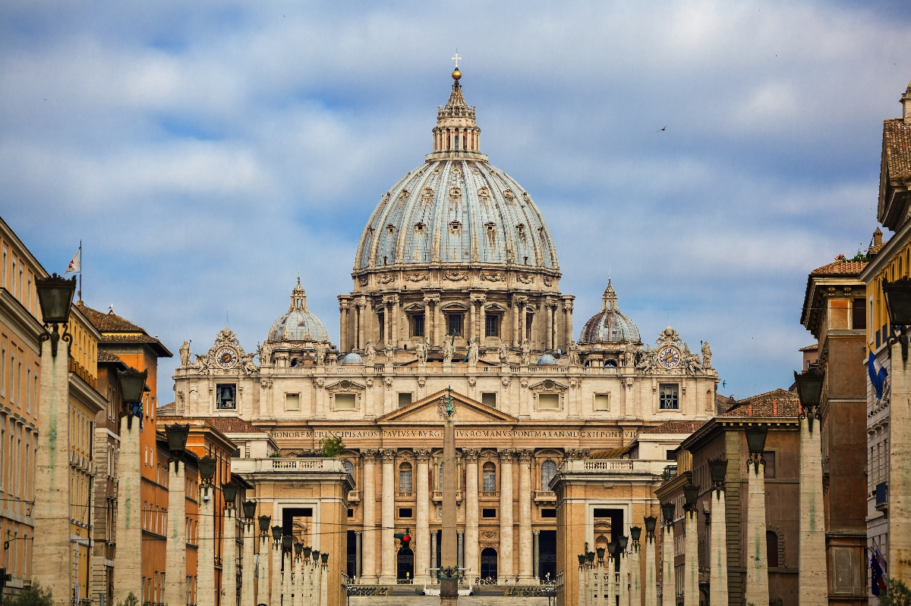
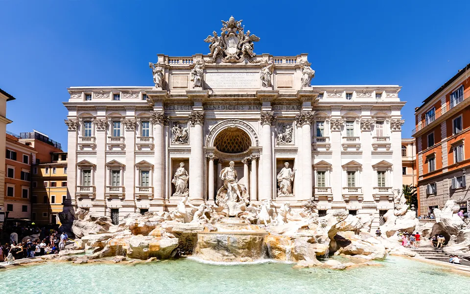

판테온(Pantheon)은 로마에 있는 고대 로마 시대의 건축물로, 원래 모든 신들을 기리기 위해 지어진 사원입니다.

포로 로마노(Forum Romanum)는 고대 로마의 정치, 상업, 종교, 사법 활동의 중심지였던 광장입니다.

피렌체 대성당(Cattedrale di Santa Maria del Fiore)은 이탈리아 피렌체의 중심에 있는 대표적 고딕·르네상스 양식 성당으로, 돔 설계로 유명합니다.

콜로세움(Colosseum)은 고대 로마 시대에 지어진 원형 경기장으로, 검투사 경기와 각종 공개 행사, 연극, 모의 해전 등이 열리던 역사적 건축물입니다.

성 베드로 대성당(Basilica di San Pietro)은 바티칸 시국에 있는 세계에서 가장 유명한 가톨릭 성당 중 하나이자, 로마 가톨릭 교회의 중심 성당입니다.

트레비 분수(Fontana di Trevi)는 이탈리아 로마에 있는 유명한 바로크 양식 분수로, 로마의 오래된 수도교인 아쿠아 벤디아(Acqua Vergine)에서 물을 끌어와 18세기에 완성되었습니다.
 History
Artifacts
Opera
Tourist attraction
Food
History
Artifacts
Opera
Tourist attraction
Food